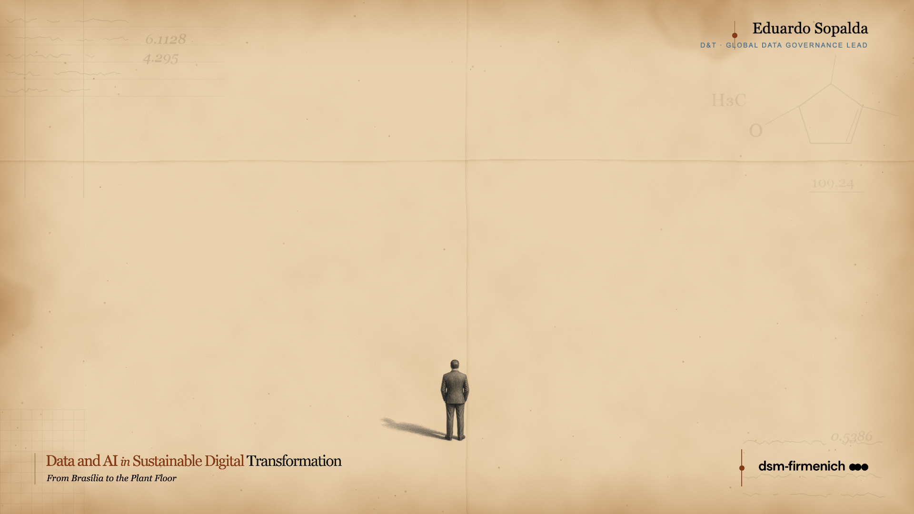

1 : 250
1 : 500
1 : 1000
2025 total Scope 1, 2 & 3 emissions
11,002 kt CO₂e
Source: dsm-firmenich
Integrated Annual Report 2025
01
From above,
every line found its place.
Below,
every line met a person.
From above, every line found its place.
Below, no one knew where to stand.
I had built them a plaza
nobody wanted to stand in.
…not as a metaphor.
ACT 01
The Architect
We design from above.
Not always for the person
who has to live
with the result.